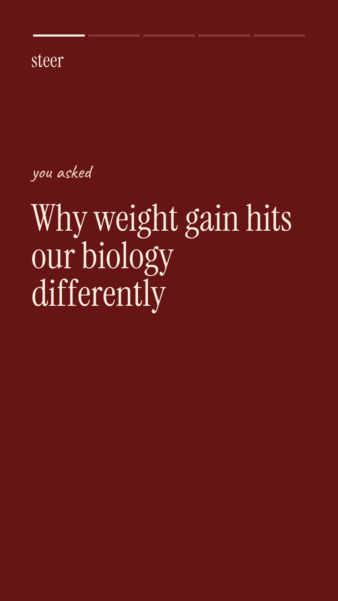
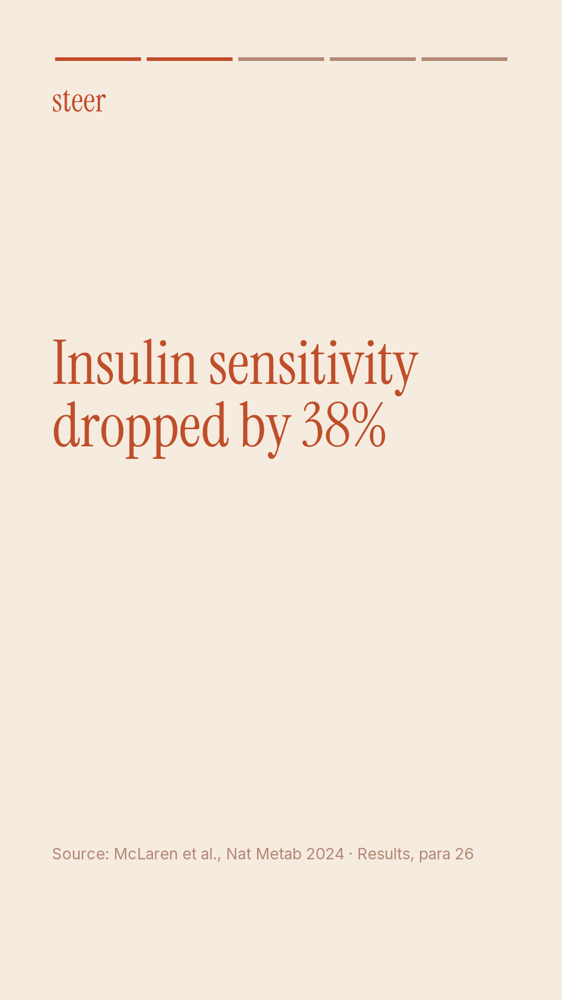
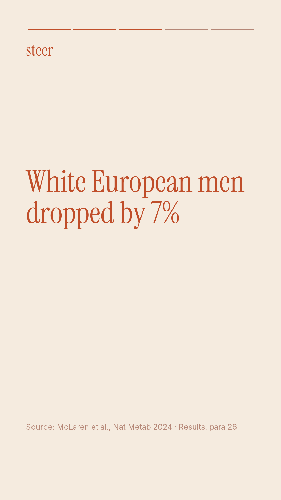
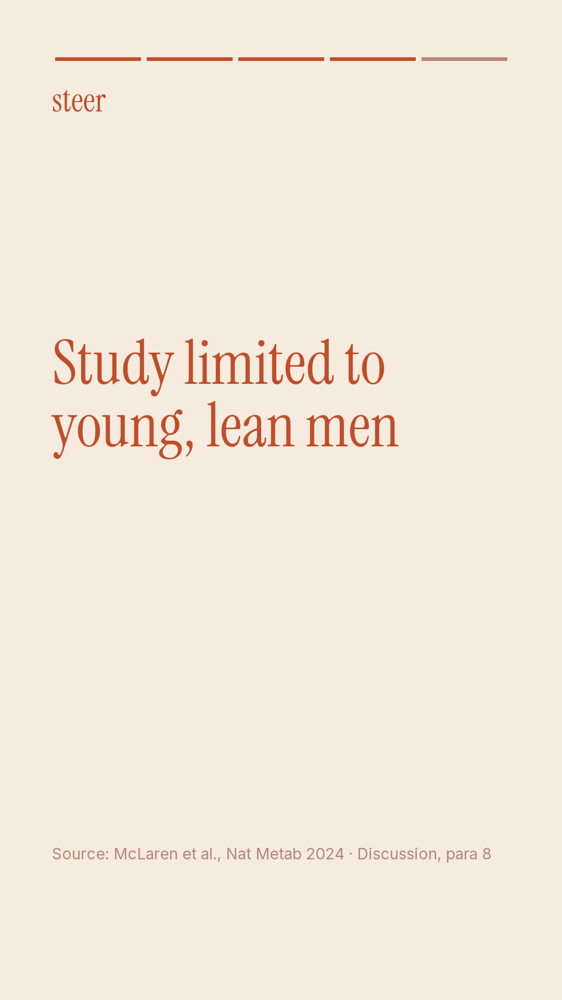
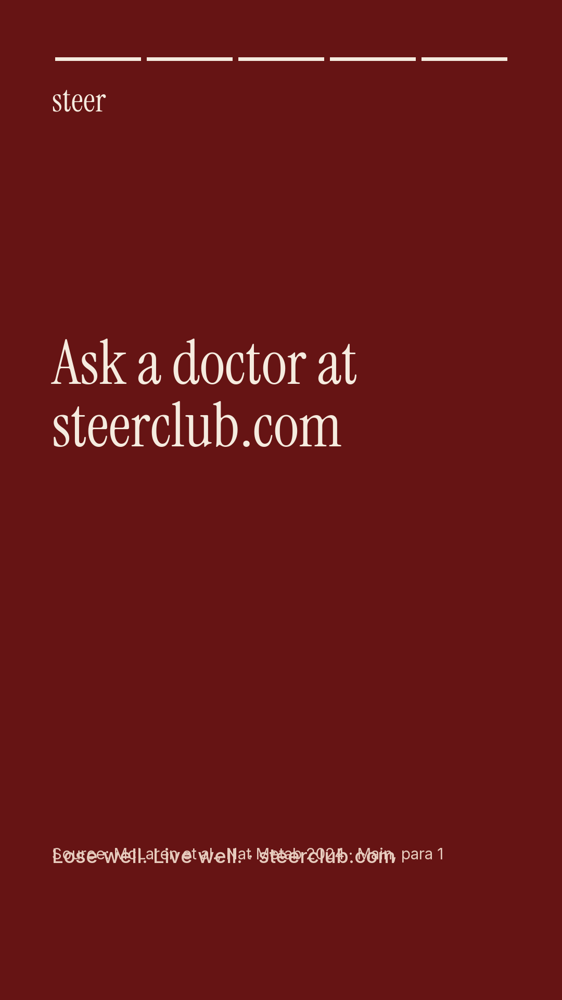

Doctor review · McLaren et al., Nat Metab 2024
Message: South Asian biology responds differently to weight gain, showing sharper drops in insulin sensitivity, which is why metabolic care must be personalized and doctor-led.
Why: This message addresses the audience's frustration with standard diet advice by grounding their experience in biology rather than personal failure. By highlighting metabolic differences documented in clinical research, it reinforces the need for personalized doctor-led plans built on blood work.
Why: This message addresses the audience's frustration with standard diet advice by grounding their experience in biology rather than personal failure. By highlighting metabolic differences documented in clinical research, it reinforces the need for personalized doctor-led plans built on blood work.
0 flag(s) from the automatic checks: none
Posts, line by line, with their sources

carousel slide 1
South Asian biology · Why weight gain affects South Asian bodies differently · In response to weight gain, insulin sensitivity dropped by 38% in South Asian men, compared to a 7% decrease in white European men.
c3 · Results, para 26 · match 1.0
“Insulin sensitivity, as assessed by the Matsuda insulin sensitivity index, decreased by 38% in SAs, but only by 7% in the WEs, in response to weight gain (P = 0.02 for ethnicity × weight gain interaction).”

carousel slide 2
Insulin resistance · Insulin resistance rises much faster during weight gain · Insulin resistance increased by 160% in South Asian men following weight gain compared to 4% in white European men.
c5 · Results, para 26 · match 1.0
“Similarly, HOMAIR increased by 160% in SAs compared with 4% in WEs (P = 0.01 for ethnicity × weight gain interaction).”

carousel slide 3
Fasting insulin · Fasting insulin levels spike significantly higher in South Asian men · Fasting insulin levels increased by 175% in South Asian men after weight gain, whereas white European men showed no increase.
c4 · Results, para 26 · match 1.0
“Fasting insulin increased by 175% in SAs, compared to no increase in the WEs (P = 0.02 for ethnicity × weight gain interaction).”

carousel slide 4
Lean tissue · Different lean tissue gains during periods of weight gain · White European men gained more than three times as much lean tissue as South Asian men during the weight gain phase (2.4 l versus 0.7 l).
c6 · Discussion, para 3 · match 1.0
“It is, however, noteworthy that the WE men experienced a more than threefold larger increase in lean tissue in response to weight gain than SA men (2.4 l versus 0.7 l).”

carousel slide 5
Trial limits · Why your personal blood tests always matter most · The study findings are limited by being conducted exclusively in young, lean men. Your own labs and a doctor's reading guide your specific path.
c12 · Discussion, para 8 · match 1.0
“The study was also limited to young, lean men, who we chose as the participant group in this initial study for two main reasons.”

carousel slide 6
Doctor-led care · Build a long-term plan based on your own labs · South Asians develop type 2 diabetes a decade earlier and at lower BMI values. Talk to Steer doctors for screening and habits built for Indian routines.
c1 · Main, para 1 · match 1.0
“SAs have three- to fivefold higher type 2 diabetes prevalence, and develop the disease a decade earlier and at lower body mass index (BMI) values, than WEs1.”

static post
In South Asian men, insulin resistance increased by 160% after weight gain · Compared to a 4% increase in white European men. Your metabolic health needs personalized care based on your blood tests.
c5 · Results, para 26 · match 1.0
“Similarly, HOMAIR increased by 160% in SAs compared with 4% in WEs (P = 0.01 for ethnicity × weight gain interaction).”

reel scene 1
Why does gaining even a little weight feel like it hits our health harder? · Why weight gain hits our biology differently
no claim (hook or sign-off)

reel scene 2
In response to weight gain, insulin sensitivity dropped by 38% in South Asian men. · Insulin sensitivity dropped by 38%
c3 · Results, para 26 · match 1.0
“Insulin sensitivity, as assessed by the Matsuda insulin sensitivity index, decreased by 38% in SAs, but only by 7% in the WEs, in response to weight gain (P = 0.02 for ethnicity × weight gain interaction).”

reel scene 3
White European men in the same study experienced only a 7% decrease. · White European men dropped by 7%
c3 · Results, para 26 · match 1.0
“Insulin sensitivity, as assessed by the Matsuda insulin sensitivity index, decreased by 38% in SAs, but only by 7% in the WEs, in response to weight gain (P = 0.02 for ethnicity × weight gain interaction).”

reel scene 4
Remember, this study was conducted exclusively in young, lean men, so your own labs matter. · Study limited to young, lean men
c12 · Discussion, para 8 · match 1.0
“The study was also limited to young, lean men, who we chose as the participant group in this initial study for two main reasons.”

reel scene 5
It is biology, not willpower. Talk to a doctor at Steer to review your labs. · Ask a doctor at steerclub.com
c1 · Main, para 1 · match 1.0
“SAs have three- to fivefold higher type 2 diabetes prevalence, and develop the disease a decade earlier and at lower body mass index (BMI) values, than WEs1.”
Caption
Ever wondered why standard diet advice does not work the same for everyone? Research shows that in response to weight gain, insulin sensitivity dropped by 38% in South Asian men, compared to a 7% decrease in white European men. In the same trial, fasting insulin levels increased by 175% in South Asian men. This study was conducted exclusively in young, lean men, showing why personalized labs matter. At Steer, our doctors screen your blood tests to build a personalized metabolic plan made for Indian lifestyles. Before you start, hear it from a doctor, not a reel.
steerclub.com
steerclub.com
#MetabolicHealth #SouthAsianHealth #InsulinResistance #DoctorLedCare #IndianWellness #BloodTestsFirst #LoseWellLiveWell #EvidenceBasedHealth #HealthClubIndia
Hinglish
Kya aapne kabhi socha hai ki generic diet plans hum sab par ek jaisa kaam kyu nahi karte? Research kehta hai ki weight gain ke jawab mein, South Asian men mein insulin sensitivity 38% kam ho gayi, jabki white European men mein sirf 7% decrease hua. Is hi study mein, South Asian men mein fasting insulin levels 175% badh gaye. Yeh study exclusively young aur lean men par thi, jo dikhati hai ki aapke blood tests kitne zaroori hain. Isliye generic shortcuts kaam nahi karte. Steer par humare doctors aapke blood tests check karke personalized metabolic plan banate hain. Before you start, hear it from a doctor, not a reel.
steerclub.com
Kya aapne kabhi socha hai ki generic diet plans hum sab par ek jaisa kaam kyu nahi karte? Research kehta hai ki weight gain ke jawab mein, South Asian men mein insulin sensitivity 38% kam ho gayi, jabki white European men mein sirf 7% decrease hua. Is hi study mein, South Asian men mein fasting insulin levels 175% badh gaye. Yeh study exclusively young aur lean men par thi, jo dikhati hai ki aapke blood tests kitne zaroori hain. Isliye generic shortcuts kaam nahi karte. Steer par humare doctors aapke blood tests check karke personalized metabolic plan banate hain. Before you start, hear it from a doctor, not a reel.
steerclub.com
Every verified claim
| id | finding | verbatim quote | where |
|---|---|---|---|
| c1 | South Asians have a three- to fivefold higher prevalence of type 2 diabetes and develop the disease a decade earlier and at lower body mass index (BMI) values than white Europeans. | SAs have three- to fivefold higher type 2 diabetes prevalence, and develop the disease a decade earlier and at lower body mass index (BMI) values, than WEs1. | Main, para 1 |
| c2 | Weight gain interventions resulted in similar relative weight increases between ethnic groups, with white European men gaining 6.3% ± 0.2% and South Asian men gaining 6.5% ± 0.3% of total body weight (P = 0.62). | Increases in weight and BMI with the weight gain intervention were similar between groups, with the WE men gaining 6.3% ± 0.2% and SA men gaining 6.5% ± 0.3% in body weight in response to the intervention (P = 0.62 for ethnic difference). | Results, para 3 |
| c3 | In response to weight gain, insulin sensitivity measured by the Matsuda index dropped by 38% in South Asian men, compared to a 7% decrease in white European men (P = 0.02). | Insulin sensitivity, as assessed by the Matsuda insulin sensitivity index, decreased by 38% in SAs, but only by 7% in the WEs, in response to weight gain (P = 0.02 for ethnicity × weight gain interaction). | Results, para 26 |
| c4 | Fasting insulin levels increased by 175% in South Asian men after weight gain, whereas white European men showed no increase (P = 0.02). | Fasting insulin increased by 175% in SAs, compared to no increase in the WEs (P = 0.02 for ethnicity × weight gain interaction). | Results, para 26 |
| c5 | Insulin resistance measured by HOMAIR increased by 160% in South Asian men following weight gain compared to 4% in white European men (P = 0.01). | Similarly, HOMAIR increased by 160% in SAs compared with 4% in WEs (P = 0.01 for ethnicity × weight gain interaction). | Results, para 26 |
| c6 | White European men gained more than three times as much lean tissue as South Asian men during the weight gain phase (2.4 l versus 0.7 l). | It is, however, noteworthy that the WE men experienced a more than threefold larger increase in lean tissue in response to weight gain than SA men (2.4 l versus 0.7 l). | Discussion, para 3 |
| c7 | At baseline, postprandial insulin concentrations were 62% higher in South Asian men than white European men (P = 0.006), despite similar baseline glucose and fasting insulin levels. | Baseline postprandial insulin concentrations were 62% (P = 0.006) higher in SAs than WEs, although fasting glucose and insulin concentrations, and postprandial glucose concentrations, did not differ significantly at baseline between the ethnic groups. | Discussion, para 2 |
| c8 | South Asian participants had an 18% larger mean fat cell diameter (P = 0.006) and 76% larger fat cell volume (P = 0.006) at baseline than white European participants. | At baseline, mean adipocyte diameter (by 18%, P = 0.006) and adipocyte volume (by 76%, P = 0.006) were larger in SA participants. | Results, para 28 |
| c9 | At baseline, 60% of total fat cell volume in South Asian participants was contained in large adipocytes compared with 28% in white European participants (P = 0.01). | In SAs, 60% of their total adipocyte volume was contained in large adipocytes compared with 28% in WEs (P = 0.01). | Results, para 28 |
| c10 | Cardiorespiratory fitness (maximal oxygen uptake) at baseline was 24% lower in absolute terms (P < 0.0001) and 14% lower relative to body weight (P = 0.0001) in South Asian participants compared with white European participants. | At baseline, maximal oxygen uptake was lower in SA than WE participants both in absolute terms (l min−1; 24% lower, P < 0.0001) and relative to body weight (ml kg−1 min−1; 14% lower, P = 0.0001). | Results, para 27 |
| c11 | Data following the weight loss phase could not be reliably presented because only 3 South Asian and 16 white European participants completed post-weight-loss measurements. | Only 3 SA and 16 WE participants completed measurements following the weight loss phase of the study; therefore, these data are not robust and have not been presented. | Results, para 1 |
| c12 | The study findings are limited by being conducted exclusively in young, lean men. | The study was also limited to young, lean men, who we chose as the participant group in this initial study for two main reasons. | Discussion, para 8 |
Thrown out by the verifier
| proposed claim | why it was rejected |
|---|---|
| none | |